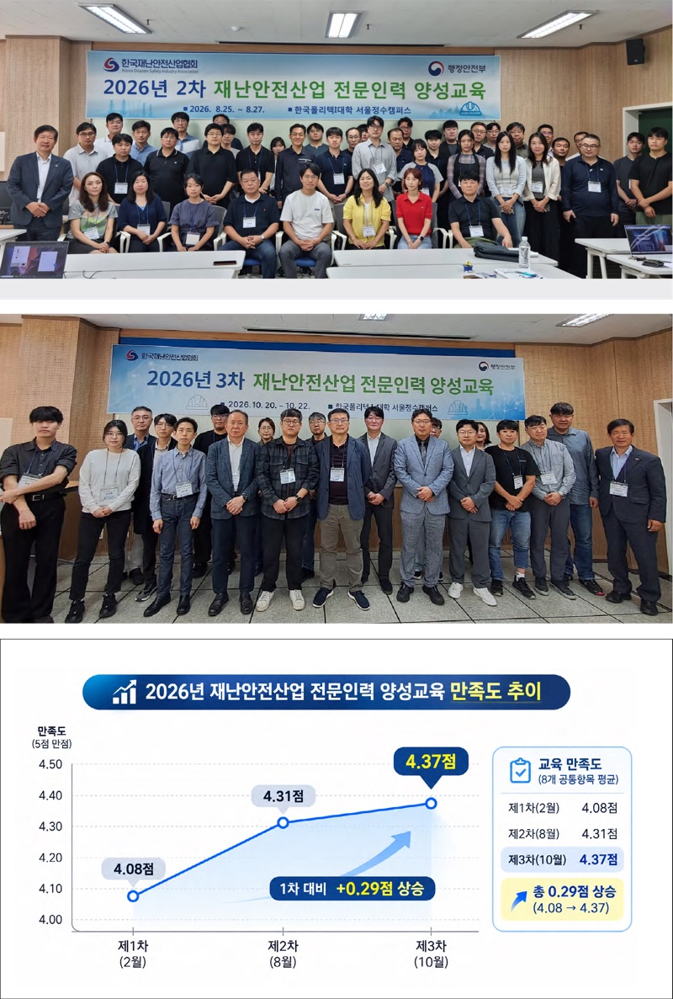
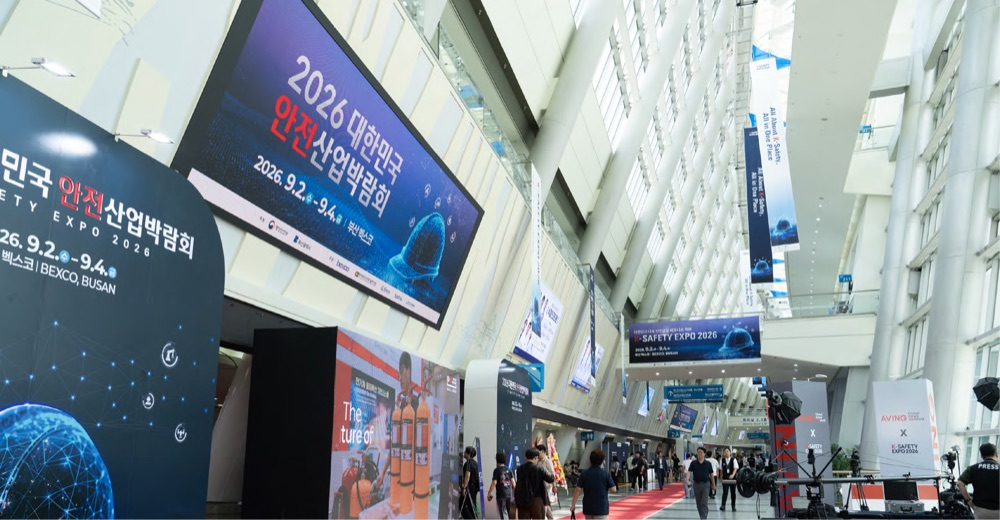
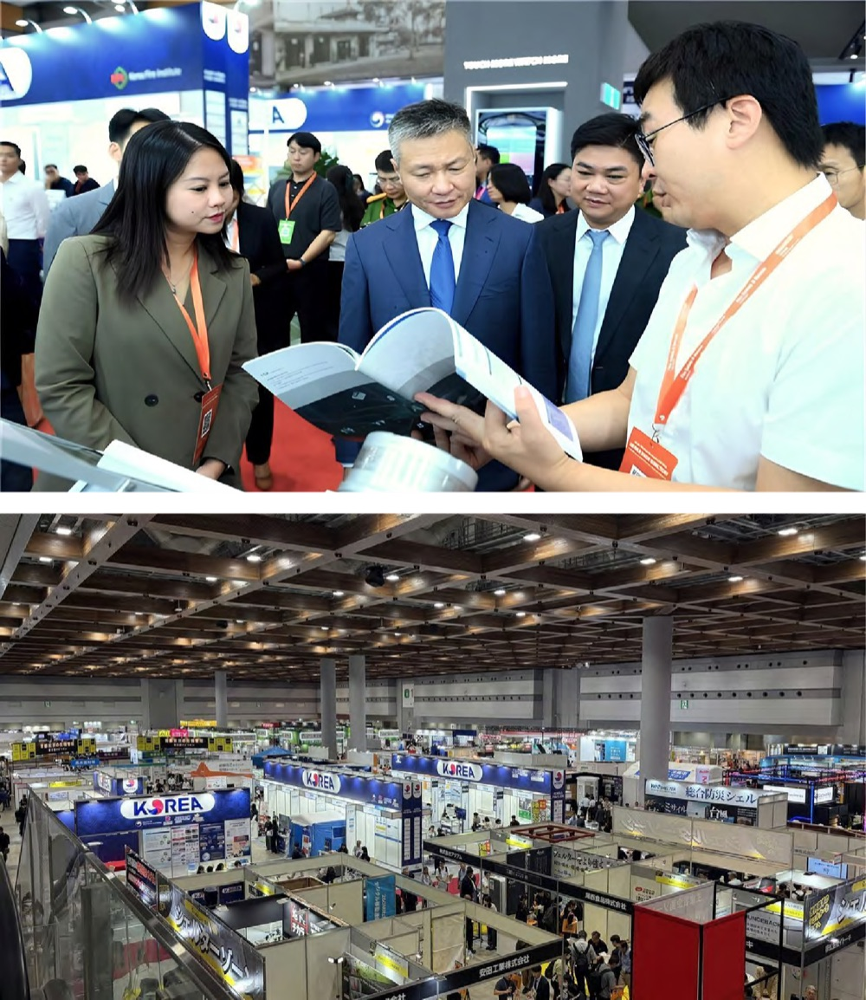
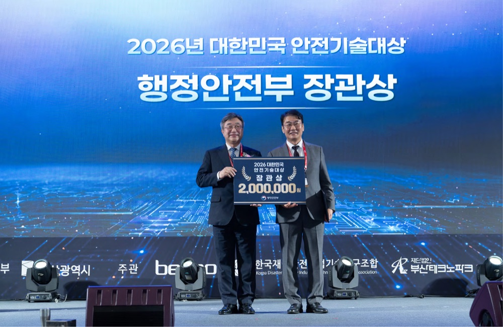
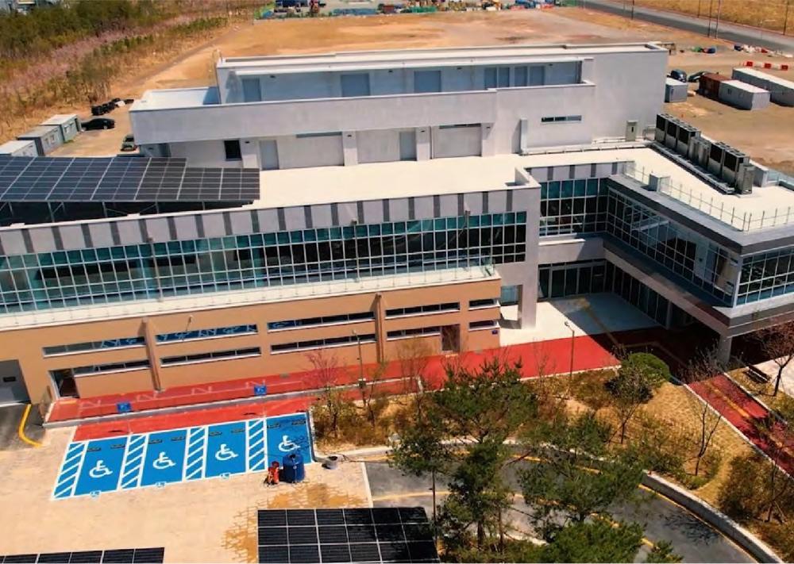

한국재난안전산업협회,
재난안전 R&D 전문인력 연간 88명 양성
한국재난안전산업협회가 재난안전산업 연구개발 전문인력 양성교육에서 교육 참여 확대와 교육 품질 향상이라는 성과를 거두고 있다. 협회는 2026년 하반기 두 차례 교육을 통해 기업·대학·연구기관 등의 전문인력 61명을 양성했다. 이는 상반기 27명의 약 2.3배로, 연간 수료인원은 총 88명이다.
8월과 10월 한국폴리텍대학 서울정수캠퍼스에서 진행된 교육은 교육생 의견과 산업 현장의 수요를 반영해 교과목을 개선했다. 재난안전산업 정책·제도, R&D 기획·수행, 기술사업화·인증제도에 더해 AI·디지털트윈 등 첨단기술 융합 분야를 보강했다.
교육 만족도는 회차 별로 꾸준히 상승했다. 특히 제3차 교육에서는 업무수행 도움도와 최신 동향 반영이 각각 4.53점을 기록해 교육의 실무 활용성과 최신 기술동향 반영에 대해 높은 평가를 받았다. 협회는 앞으로도 교육과정과 운영방식을 지속적으로 개선하고, 교육기간·장소 다변화를 통해 참여 기회를 확대할 계획이다.


첨단 안전산업의 미래
‘2026 대한민국 안전산업박람회’
행정안전부는 부산광역시와 함께 9월 2일부터 4일까지 부산 벡스코에서 ‘2026 대한민국 안전산업박람회’를 개최했다. 12회째를 맞는 이번 박람회는 ‘첨단기술의 융합, 안전의 미래’를 주제로 국내외 340개 기업·기관이 920개 부스를 운영했으며, AI·로봇·드론 등 첨단 재난안전 제품과 기술을 선보였다. 해외바이어 100개사와의 수출상담회, 지방정부·대기업 등 84개사와의 구매상담회 등 재난안전기업의 판로개척을 집중적으로 지원해 1,468건(전년 대비 1.5배↑)의 비즈니스 상담과 계약추진액 4,231억원(전년도 3,747억원)의 성과를 올렸다.
‘베트남 씨큐텍·일본 리스콘’ 한국관 운영, 국내
재난안전기업 해외 진출 기반 확대
행정안전부는 9월 9일~12일 베트남 하노이에서 열린 ‘2026 베트남 씨큐텍(Secutech Vietnam 2026)’ 에 재난안전기업 35개사가 참여하는 한국관을 운영했다. 930건의 비즈니스 상담과 약 490억 원 규모의 계약 추진, 업무협약 5건의 성과를 거뒀다. 베트남 공안부 차관이 한국관을 직접 방문했으며, 930건의 비즈니스 상담을 통해 490억원 규모의 계약을 논의하였으며, 업무협약 5건을 체결하였다.
또한, 행정안전부는 9월 30일~10월 2일 일본 도쿄에서 열린 ‘2026 리스콘 도쿄(RISCON TOKYO 2026)’에서 한국관을 운영해 성황리에 마무리했다. 행안부와 지방정부(부산·전북·경남) 지원으로 재난안전기업 23개사가 참여해 지진 경보시스템, 화재 대응제품 등을 선보였다. 참여기업은 약 680억 원 규모의 비즈니스 상담 561건을 진행하고 업무협약 3건을 체결하는 성과를 달성했다, 행안부는 상담·협약이 실제 수출로 이어지도록 후속 지원을 이어갈 계획이다.


AI 기반 산업안전, 침수·화재 대응까지,
‘2026 대한민국 안전기술대상’ 수상작 8점 선정
행정안전부는 우수 재난안전 기술 발굴을 위한 ‘2026 대한민국 안전기술대상’ 수상작 8점을 선정했다. 대통령상은 오토아이티㈜의 ‘HDS AI 기반 인체감지 안전관리 시스템’으로, 위험구역 접근 시 0.25초 만에 설비를 정지시키는 기술이다. 국무총리상은 해양환경공단의 ‘AI 기반 수상로봇 통합관제 시스템’이, 행안부장관상은 지진재해 예방기술 등 6개 기술이 받았다. 시상식은 9월 2일 부산 안전산업박람회 개막식에서 진행되었다.
‘국민안전산업펀드 1호’ 결성 추진
행정안전부는 재난안전 분야 유망 기업 육성을 위해 모태펀드 국민안전계정으로 운용되는 ‘국민안전산업펀드 1호’ 결성을 추진한다. 운용사로 선정된 현대차증권은 정부 출자금 50억 원과 민간 출자금 55억 원을 합쳐 총 105억 원 규모 펀드를 연내 결성할 계획이다. 주요 투자 대상은 인공지능(AI)·로봇 등 첨단기술을 보유한 재난안전기업이며, 투자금은 기술·제품 고도화와 인증·특허 획득 등에 활용된다.

울산에 ‘폭염 특화 재난안전산업 진흥시설’ 조성
행정안전부는 울산광역시와 울산테크노파크가 공동 신청한 ‘폭염 특화 재난안전산업 진흥시설’ 조성 사업을 최종 선정하였다. 이번 사업은 기후변화로 심화되는 폭염 재난에 대응하기 위해 실내·외 실증시스템 등 11종의 전문 장비를 구축하고, 관련 기술의 성능 평가부터 판로 개척까지 전 과정을 일괄 지원하는 것을 목적으로 한다. 이를 위해 행정안전부와 울산광역시는 2026년부터 3년간 총 132억 원(국비 66억, 지방비 66억)을 울산테크노파크에 지원할 예정이다. 이번 진흥시설 조성을 통해 폭염 분야의 재난안전기술을 선진화하고 핵심 기업을 유치함으로써, 약 700여 개의 전문 일자리 창출과 804억 원 규모의 경제적 효과를 거둘 것으로 기대하고 있다.
지원사업
재난안전산업 지원사업은 ‘안전산업24’를 확인하세요!
안전산업 24 바로가기